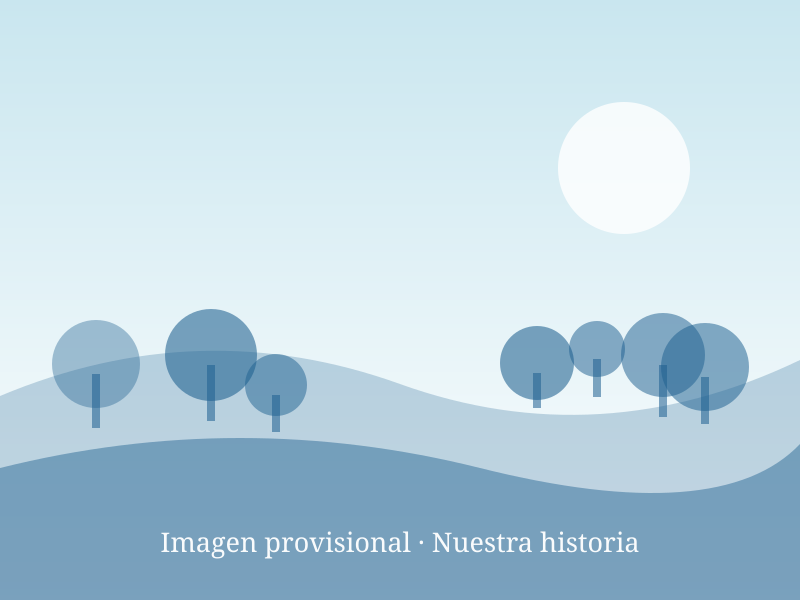

De historia
Raíces profundas en la solidaridad de Río Cuarto desde 1970.
Cuidado continuo
Atención médica, de enfermería y humana las 24 horas, todos los días del año.
De naturaleza
Un predio seguro, arbolado y totalmente accesible para el bienestar integral.
Respaldo congregacional
Obra gestionada por las Hermanas de Nuestra Señora de la Consolación.

Más de 50 años acompañando la vida
El Pequeño Cottolengo Don Orione nació en Río Cuarto hacia 1970, impulsado por el Padre Geniale Silvi y un grupo de vecinos benefactores. Desde 2001 lo conducen las Hermanas de Nuestra Señora de la Consolación.
Hoy somos el hogar de personas con discapacidad y adultos mayores en situación de vulnerabilidad, donde la atención profesional y el ambiente de familia van de la mano.
Atención integral, todos los días
Cuidamos a cada persona en todas sus dimensiones: física, psicológica, social y espiritual.
Cuidado 24/365
Residencia asistida con acompañamiento personalizado todos los días del año.
Salud y rehabilitación
Médico, enfermería 24 h, kinesiología, terapia ocupacional y nutrición.
Talleres y vida comunitaria
Arte, huerta, música, memoria, paseos y celebraciones.
Acompañamiento espiritual
Capilla, celebraciones y respeto por la fe de cada residente.
Más de 1,8 hectáreas de naturaleza
Un predio seguro, arbolado y totalmente accesible, pensado para la tranquilidad y el bienestar.
Cada gesto sostiene un hogar
Tu aporte, tu tiempo o tu oración se transforman en cuidado, dignidad y consolación para quienes más lo necesitan.
¿Buscás un lugar para un familiar?
La admisión la evalúa nuestro Equipo Técnico Interdisciplinario junto a la Dirección, priorizando la vulnerabilidad social y que podamos dar los apoyos que la persona necesita. Escribinos y te orientamos sin compromiso.